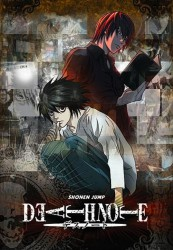

")
 
 IMDB-Wertung: 9.0 / 10
IMDB-Wertung: 9.0 / 10  Metascore:
Metascore: 
Ein Shinigami (Todesgott) lässt ein Notizbuch in der irdischen Welt zurück, und Light Yagami, ein hochbegabter Schüler, findet es und nimmt es mit nach Hause. Schon bald findet er Gefallen an diesem Buch: Die Personen, deren Namen man darin notiert, sind dem Tode geweiht. Light entdeckt seinen Ehrgeiz, die Welt zu verändern, indem er sie von bösen Verbrechern befreit. Doch er hat einen Gegenspieler, der nicht minder intelligente Meisterermittler L. Dazu kommt, dass Lights eigener Vater bei der Kriminalpolizei ist und mit L gegen ihn ermittelt...
Jahr: 2006
Dauer: 23 Minuten
FSK:
Land: Japan Studio: AXNTonspuren:
Untertitel: Englisch, Deutsch, , Französisch, ,
Auflösung: 1080p (1920x1080) Größe: 1464 MB
Genre: Thriller, Horror, Drama, Fantasy, Krimi, Animation/Trick, Mystery, TV-Serie
Regisseur: Tetsurô Araki, Tomohiko Itô, Hiroyuki Tsuchiya, Mitsuhiro Yoneda, Eiko Nishi
Drehbuch: Gracie P. Aylward, Toshiki Inoue, Tomohiko Itô, Yasuko Kobayashi, Takeshi Obata
Soundtrack:
Darsteller:
 Vincent Tong als Touta Matsuda
Vincent Tong als Touta Matsuda Trevor Devall als Shuichi Aizawa
Trevor Devall als Shuichi Aizawa Chris Britton als Soichiro Yagami
Chris Britton als Soichiro Yagami Alessandro Juliani als L
Alessandro Juliani als L Shannon Chan-Kent als Misa Amane
Shannon Chan-Kent als Misa Amane Shidô Nakamura als Ryuk
Shidô Nakamura als Ryuk Brian Dobson als Hideki Ide
Brian Dobson als Hideki Ide Michael Adamthwaite als Anthony Rester
Michael Adamthwaite als Anthony Rester Kelly Metzger als Sayu Yagami
Kelly Metzger als Sayu Yagami Cathy Weseluck als Near
Cathy Weseluck als Near Heather Doerksen als Kiyomi Takada
Heather Doerksen als Kiyomi Takada Lee Tockar als Additional Voices
Lee Tockar als Additional Voices Ken'ichi Matsuyama als Gelus
Ken'ichi Matsuyama als Gelus Ashleigh Ball als Aiber's Son
Ashleigh Ball als Aiber's Son Brad Swaile als Light Yagami
Brad Swaile als Light Yagami Brian Drummond als Ryuk
Brian Drummond als Ryuk Kappei Yamaguchi als L
Kappei Yamaguchi als L Saffron Henderson als Sachiko Yagami
Saffron Henderson als Sachiko Yagami Ted Cole als Reiji Namikawa
Ted Cole als Reiji NamikawaDatei: X:\HD-Anime-Serien\Death Note\Death Note01.mkv seit 24.01.2016
Festplatte: Gemischt-01+Anime
 Es gibt insgesamt 67 Filme in der Gruppe 'HD-Anime-Serien'
Es gibt insgesamt 67 Filme in der Gruppe 'HD-Anime-Serien'